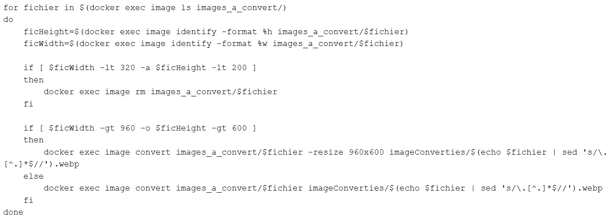
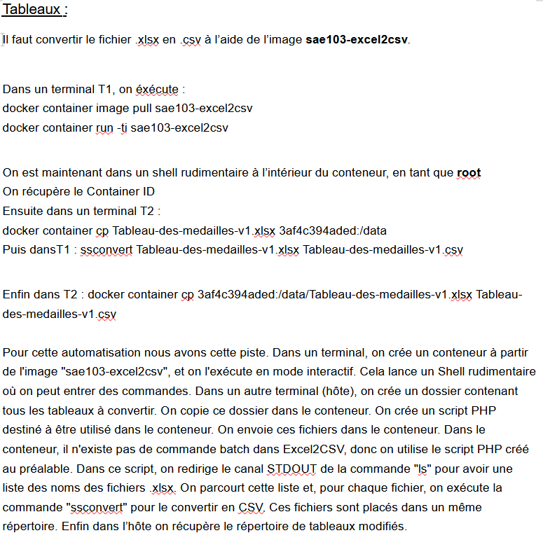

Description globale
Pour un projet universitaire pendant ma 1ere année de BUT j'ai automatisé le traitement de fichiers pour une utilisation dans un site web. En groupe de 4 nous avons utilisé Docker.
Les grandes étapes
- Analyse du jeu de fichiers fourni (images, textes, tableaux) et identification des besoins de conversion et de traitement.
- Utilisation de Docker et d’images spécifiques (excel2csv, imagick, html2pdf) pour convertir les fichiers dans des formats adaptés au Web.
- Écriture de scripts (Bash ou PHP) pour automatiser les conversions dans des conteneurs Docker.
- Prise en compte de nouveaux fichiers ou de modifications de fichiers et mise à jour de la chaîne de traitement.
- Rédaction de documents PDF décrivant les méthodes utilisées, les choix techniques, et archivage des fichiers traités.
Mes acquis
- Esprit d'équipe
- Communication
- Rédaction de document de synthèse
Les outils utilisés
- Linux
- Langages Bash, PHP
- Docker
Exemple de script bash

Partie de compte rendu
